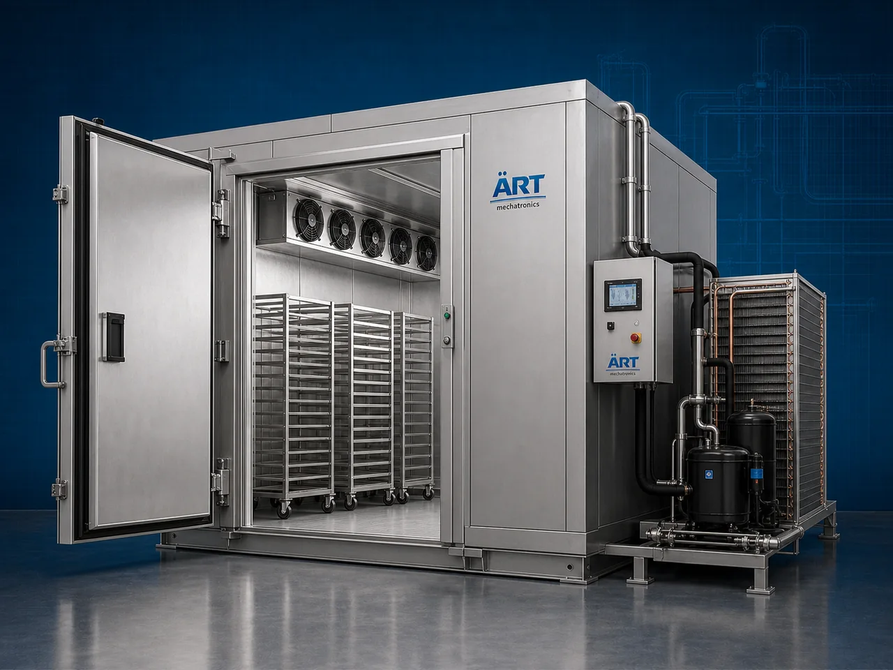

Blast Freezer Machine (Industrial Rapid Freezing & Shock Freezing System)
A Blast Freezer Machine, also known as a Shock Freezer, Rapid Freezing Machine, Industrial Blast Freezer, or Quick Freezing System, is an advanced industrial refrigeration solution designed for ultra-fast freezing, temperature reduction, product preservation, moisture retention, bacterial growth…

About the Blast Freezer
Blast freezing systems are widely used for: ✔ Rapid food freezing operations ✔ Frozen food preservation ✔ Bakery and dairy freezing ✔ Ready-to-eat meal freezing ✔ Pharmaceutical cold storage applications ✔ Ice crystal control processing ✔ Cold chain management systems ✔ Industrial low-temperature preservation
The machine improves: ✔ Product shelf life ✔ Texture and taste retention ✔ Nutritional preservation ✔ Product quality consistency ✔ Moisture retention ✔ Industrial hygiene standards ✔ Freezing productivity
Industrial blast freezer machines use: ✔ High-velocity cold air circulation systems ✔ Low-temperature refrigeration technology ✔ Evaporator and compressor systems ✔ PLC and HMI automation controls ✔ Stainless steel insulated freezing chambers
to rapidly reduce product temperature while minimizing ice crystal formation and preserving product quality with superior efficiency and high industrial productivity.
Blast freezer machines are widely used in industries such as:
Frozen food industries Food processing industries Bakery industries Dairy industries Pharmaceutical industries Hospitality industries Cold storage industries Industrial refrigeration industries
where rapid freezing, product preservation, and reliable cold chain management are essential.
The machine is highly suitable for: ✔ Frozen food production ✔ Bakery and dairy freezing operations ✔ Pharmaceutical preservation systems ✔ Ready-to-eat meal freezing ✔ Industrial cold storage applications ✔ High-speed freezing automation systems
ART Mechatronics offers high-performance blast freezer machines, engineered for continuous industrial operation, hygienic freezing performance, energy-efficient refrigeration, and reliable long-term industrial productivity.
Working Principle of Blast Freezer Machine
- 1. Product Loading & Pre-Cooling Process Food products or industrial materials are loaded into insulated freezing chamber for rapid freezing operation.
- 2. Rapid Freezing & Cold Air Circulation Process Machine circulates ultra-cold high-velocity air across products using industrial evaporators and refrigeration systems to achieve rapid temperature reduction.
Advanced shock freezing technology ensures fast freezing while preserving texture, taste, and product structure.
- 3. Freezing & Preservation Operation Machine handles freezing of: ✔ Fruits and vegetables ✔ Bakery products ✔ Dairy products ✔ Ready-to-eat meals ✔ Frozen snacks ✔ Pharmaceutical products ✔ Nutraceutical materials ✔ Industrial food products
accurately and continuously.
- 4. Moisture Retention & Ice Crystal Control Process Machine performs: Rapid freezing Shock freezing Cold preservation Moisture retention Temperature stabilization Bacterial growth reduction
for efficient industrial cold chain and preservation operations.
- 5. Intelligent Automation & Energy Management Integration Optional systems include: Digital temperature monitoring systems Remote monitoring systems Automatic defrost systems Energy-saving refrigeration controls Data logging systems
- 6. Finished Product Discharge & Cold Storage Transfer Processed frozen products discharged automatically for: Cold storage systems Packaging operations Export shipment handling Retail distribution Frozen logistics operations
Types of Blast Freezer Machines
- 1. Food Blast Freezer Machine Designed for: ✔ Frozen food and ready-to-eat product processing applications
- 2. Spiral Blast Freezer System Suitable for: ✔ Continuous industrial freezing operations
- 3. Tunnel Blast Freezer Machine Uses: ✔ High-capacity industrial freezing systems
- 4. Tray Type Blast Freezer Designed for: ✔ Batch freezing and cold storage operations
- 5. Pharmaceutical Blast Freezer Machine Suitable for: ✔ Medicine and sensitive product preservation systems
- 6. Fully Automatic Industrial Blast Freezing System Designed for: ✔ Complete industrial freezing automation lines
Industries Using Blast Freezer Machines
❄️ Frozen Food Industry Frozen vegetables, snacks, ready meals, and food preservation systems. 🍞 Bakery Industry Bread, pastries, dough preservation, and bakery freezing systems. 🥛 Dairy Industry Ice cream, dairy products, and low-temperature preservation systems. 💊 Pharmaceutical Industry Medicine storage, vaccine preservation, and cold chain management systems. 🍅 Food Processing Industry Rapid chilling, product stabilization, and industrial freezing operations. 🏨 Hospitality & Commercial Kitchen Industry Bulk food freezing and centralized kitchen cold storage systems.
Features & Advantages
✔ High-speed rapid freezing operation ✔ Superior product texture and quality preservation ✔ Hygienic stainless steel industrial construction ✔ PLC and automation control systems ✔ Improves shelf life and product stability ✔ Reduces ice crystal formation and moisture loss ✔ Supports multiple food and pharmaceutical products ✔ Reliable long-term industrial performance ✔ Smooth integration with industrial cold chain systems
Technical Highlights
Machine Type: Blast freezer machine Industrial rapid freezing system Shock freezing machine Material Compatibility: Food products Bakery items Dairy products Frozen snacks Pharmaceutical products Nutraceutical materials Integration: High-velocity air circulation systems Industrial refrigeration systems Evaporator units Temperature monitoring systems Features: PLC control system Touchscreen HMI Stainless steel insulated chambers Automatic defrost systems Data logging systems Applications: Rapid freezing Shock freezing Cold preservation Temperature stabilization Frozen storage Cold chain management Automation: Semi-automatic Fully automatic industrial systems
Turnkey Blast Freezing Solutions
ART Mechatronics offers: Complete blast freezing systems Automatic rapid freezing solutions Industrial cold chain management systems Refrigeration and storage integration systems Installation & commissioning After-sales service & AMC
Why Choose Art Mechatronics
Expertise in industrial refrigeration and automation systems Customized freezing solutions for multiple industries High-performance and energy-efficient freezing technology Advanced PLC and automation systems Proven industrial cold chain performance across sectors
Applications
Frozen Food Manufacturing Plants Bakery Processing Facilities Dairy Processing Units Pharmaceutical Industries Cold Storage Warehouses Industrial Food Processing Industries
Industries that use the Blast Freezer
Related Process Equipment machines
Get pricing & specs for the Blast Freezer
Share the product, target capacity, current process and plant location. These details help our engineers discuss the right machine or line configuration.
One partner, from design to start-up
ART Mechatronics designs, manufactures, installs and commissions your Blast Freezer solution with regional presence in India, UAE and Thailand.